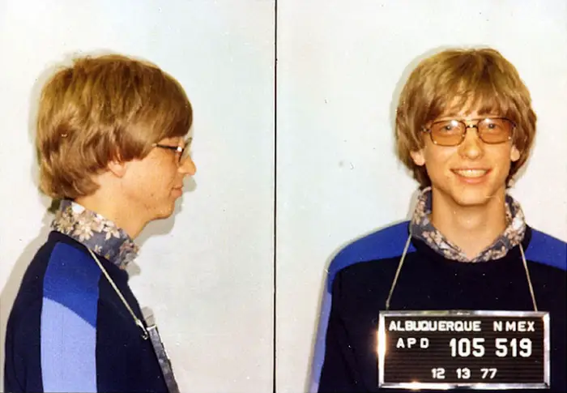
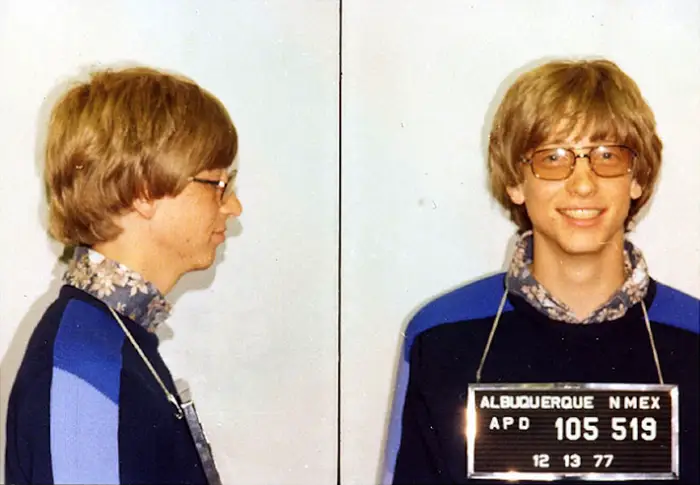

Bill gates and Paul Allen where two computer science
students at Harvard who were interested in making
software for a newly released personal computer
called the altair 8800. Later the company that
created the altair MITS decided to hire Bill and
Paul to work for them. After leaving the company in
1979 they relocated to Bellevue Washington having
founded Microsoft just 4 years prior to the move
they signed a deal with IBM to design a new operating
system (86-QDOS) to run on their new personalcomputer.
Then in 1981 when microsoft was supposed to make
another os with IBM there were complications and they
ended up breaking ties in 1982. Leaving microsoft own
theirown and IBM to finish development on their os.
Microsoft would spend they next few years developing
own operating system called windows which was a GUI
extension for MS-DOS that would go on to make waves
in the tech industry as well as billions for
the soon to be tech giant, Microsoft.
Fun fact: Bill Gates went to jail
This is a historic photo of Bill
Gates's Mug shot, which he got
due to a traffic violation in
1977 and forgot his drivers
licence leading him to end
up at the police station and
the creation of this iconic
photo.
https://www.businessinsider.com/
microsofts-history-in-photos-2015
-7#the-story-behind-the-classic-bill
-gates-mugshot-5
A photo of Bill Gates and Paul
Allen srrounded by technology
of the era in which the photo
was taken. photo curtoisy of
https://www.gq-magazine.co.uk/article/paul-allen-bill-gates-microsoft
 
